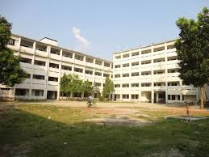

Like all other educational institutions in our country, Collectorate School and College, Rangpur had a small beginning. With a view to spreading quality education, as well as the children of the socially, educationally and economically backward people of the greater Rangpur area, the institution was founded in 1986 and since then it has been striving to the pursuit of excellence combining quality education and disciplined academic environment. Located on the midst of greenery of the historical Police Hall, Collectorate Maidan, Shurovi Garden, Zoological Garden beautiful Cricket Garden and Rangpur Stadium as well as the traditional Rangpur Govt College, the institution braces two multistoried buildings which accommodate nearly 4 thousand students thronged from the far flung corners of Rangpur and Dinajpur districts along with the adjoining localities
Collectorate School and College Rangpur initiated its academic activity in 1986 under the patronage of the police super of Rangpur Mr. Mominullah Patwari B.P, a man of rare attribute of love for education. The first batch of SSC students passed out creditably in 1989 with one student topped the list in humanity group in the Board of Secondary and Higher Secondary, Rajshahi. But the actual history of the institution dates back to 1954 when the present immense seat of learning had it modest but purposeful beginning as a primary school. The institution had a long way to travel to the present premises which was built on the place demolishing old tinshed building. Since then the institution has been starting to assume a full fledged institutional character with a concerted efforts by some education loving great hearted local charitable persons who contributed generously towards the establishment of the institution. By 1987 full-fledged high school was founded and it got affiliation from the govt. in 1988. A new dimension was added when in 1989 kindergarten section was introduced following a painstaking effort of Mr.Syed Serajul Islam, the police super. Another worthwhile milestone was achieved when the institution expanded to higher secondary or college section in 1996 due to an untiring and brave effort by another brilliant police officer Mr. M A Mabud , then the police super of Rangpur. Since then the institution has been going on to impart education of high standard to the learners of this region. Having exquisite panoramic view with modern infrastructural facilities comprising splendid laboratory, computer lab, playground Police Lines School And College, Rangpur has been a graphic example of a proud institution in this region. It has an equally enviable achievement record in the field of academic results and extracurricular tract results which are the manifestation of sincerity and commitment of so many dedicated souls who have been associated with the building of the institution since it inception a quarter century ago. We thankfully remember the name of Mr. Hasanul Haider, the Police Super who founded the 6th storied college building in 2006. 2009-2011 is the period of modernization in the annal of the Police Lines School and College, Rangpur. It will perhaps be no exaggeration to enumerate the super human endeavor by the present president of the governing body of CSCR, Mr. Saleh Mohammad Tanvir, the capable Police Super of Rangpur under whose patronage the institution has raised to present stature.